Some time ago, I was told that the model in my head,
which represents our beautiful planet as a spheroid, was a naive, dirty lie.
The earth is flat! And they don't want us to find the edge. Undeniable. Fascinating!
Well, maybe not so fascinating.
The arguments presented didn't exactly manage to shake the foundations of my world, and sadly enough, my earth stays round.
But a pretty interesting question did linger: what would it feel like to live on a disc-world?
What follows is my attempt to answer this question.
Edgy Theories
The first troubles appeared along with Newton's theory of gravity:
reading disc world texts, one would think that falling off the edge of the world is a real and terrifying possibility.
But we pedants know that the gravity field at the edge of a disc-shaped mass would pull you towards the disc.
This is because gravity pulls you towards mass (the disc) and not just down.
Which means you would be able to stand proudly on the edge, and even jump over to the other side.
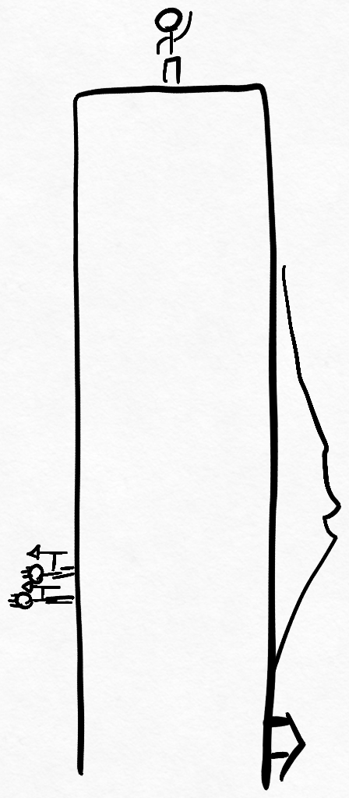
But that's not all: imagine standing at some arbitrary point on the disc, say, somewhere between the middle and the edge.
Disc-world literature foolishly paints this as a perfectly normal experience, with gravity pulling adventurous travellers straight down,
towards the disc soil under their feet, like gravity does to you right now.
But gravity typically pulls you towards where there is a lot of mass, and when you're not in the center of disc-world,
there's a lot more mass on one side than on the other.
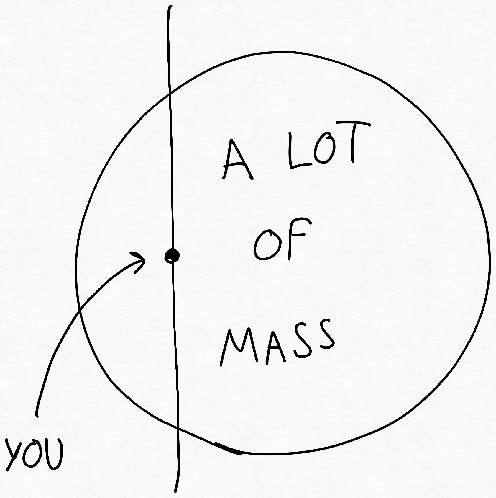
This is troubling, because it means that at least in theory, everywhere on disc-world except its center,
there should be a component of the gravity force which pulls you sideways.
This makes sense, intuitively: remember our brave hero standing on the edge of the disc world?
Well, on his way there, gravity couldn't just have switched from straight down to fully sideways all at once.
Which means, at some point, before going over the edge, he had to feel like he was climbing a very steep slope.
But this weird effect should only be felt very close to the edge of the disc, right?
Surely on most of the disc, folk are safely pulled straight down, with the small sideways force almost imperceptible,
like disc-world texts imply.
After all, it is reasonable to stand up straight, and it is said that disc world folk are very reasonable people.
Or... are they?
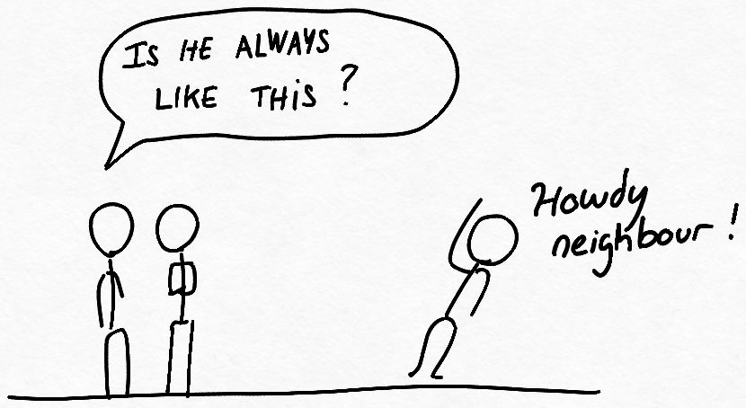
At this point, I realized that I had no clue how strong this effect would be for most of the disc inhabitants.
Would this side-force be mere thousandth of a g, almost imperceptible to inhabitants almost all the way to the edge?
Or would it be quite strong, relatively to the main down component of the force de pesanteur ?
In other words, would the world feel flat pretty much everywhere, or would it feel like a steep slope?
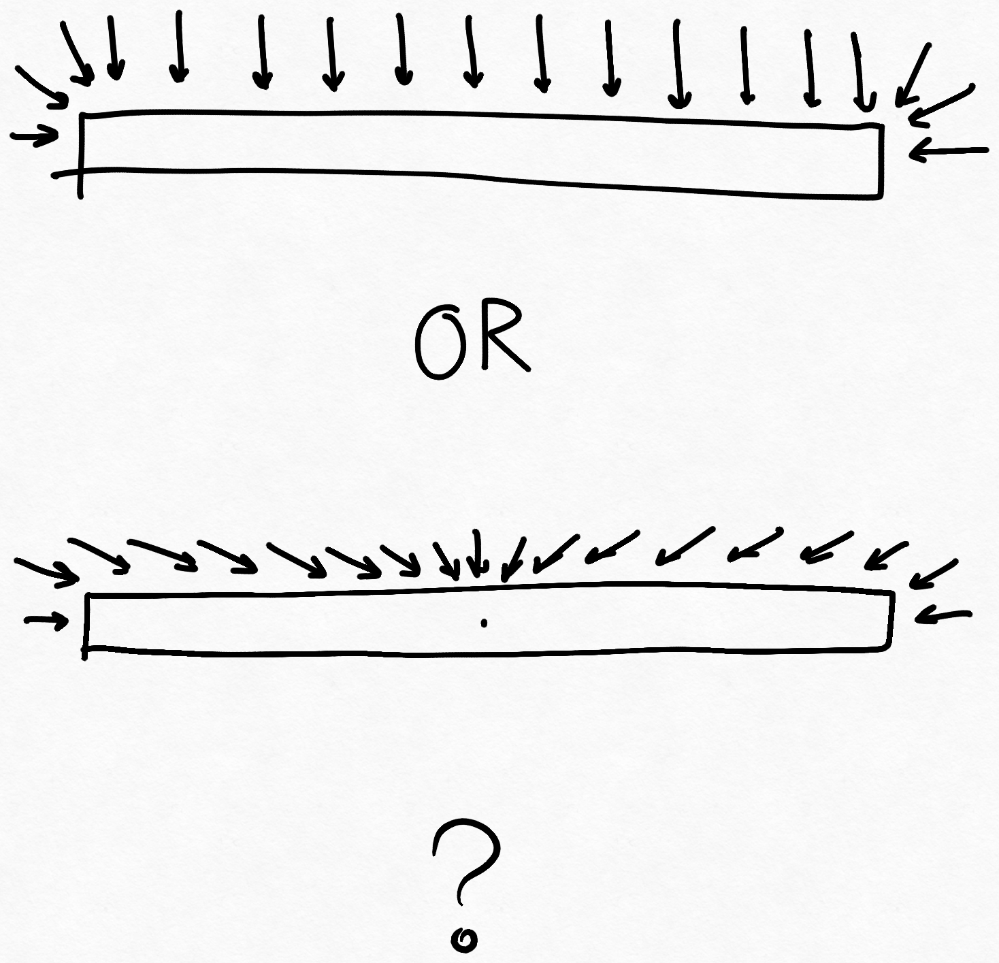
To answer this question, we need to figure out the angle of the gravity field vector along the disc surface.
Newtonian Gravity on A Flat Disc
This section is mostly theory and math. In a hurry? Skip it and go straight to the results.
First, let's recall the Newtonian theory of gravity:
the gravitational force exerted by a point-like object on another point-like object is
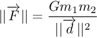
where m1 and m2 are the two object masses,
G is a cosmological constant,
and d is the distance between the two objects.
(By point-like, we mean that the two are far enough apart that ||d|| is much bigger than the object sizes.)
To make simulation simpler, it would be nice to separate the x, y, and z dimensions.
After all, the force F can be described as the combination of its x, y, and z components.
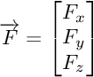
And the distance d between an object pair can be written as
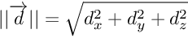
We also know that the force F points in the same direction as the vector d, which means that
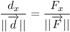
therefore
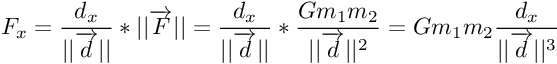
(The same holds true for Fy, Fz.)
What's more, the gravitation force adds up nicely when there are more objects present.
Of course, in the real world, things are continuous, and solving this means going through double, even triple integrals.
Here comes discretization to the rescue. Given a high enough resolution, if we model our space and disc
as a bunch of voxels (that is, 3d pixels), then we can treat each voxel as a constant-mass-and-density
object, and easily sum up their interactions. This gives a rather good approximation of the continuous field.
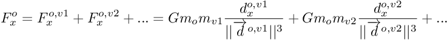
here, the force felt by our observer (o) is the sum of forces exerted by each voxel (v1, v2, ..., vn),
do,v1 is the distance vector from the observer to the voxel v1,
mv1, mv2, etc... are the masses of each voxel.
given the constant-mass-and-density approximation, mv1, mv2, etc... are all equal to some mass mvox
thus we can write Fx as
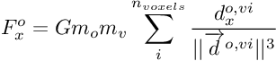
Perfect! This equation makes it easy to simulate the force felt by any observer, at any point:
calculate dx dy, dz between every point in the simulation grid and every occupied voxels.
Note
given these simplifications, we can already notice an interesting peculiarity about the angle of the gravity field
around some massive object.
For example, let's fix the y coordinate, taking a cross-cut in the middle of our object,
which implies Fy = 0.
Now say we care about the angle theta of gravity at an arbitrary point on this cross-cut.
According to trigonometry,
which is
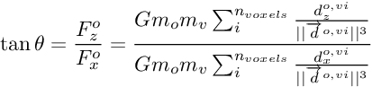
We see that the constant terms outside the sum cancel out! This leads us to our first discovery:
Given constant density throughout the disc, the angle of gravity at some latitude on our disc
depends only on the geometric shape, not the scale (bigger disc, same result), nor the mass (denser soil everywhere, same result),
nor the constant of gravity G.
Pretty neat!
Results
Thankfully, it was easier than it seemed to write a discretized gravity-field simulator using numpy,
and what's more, it can calculate the gravity field for any arbitratry 3d shape! For the details, scroll to the bottom.
Going back to our question, here are the results of simulation for the flat disc case:
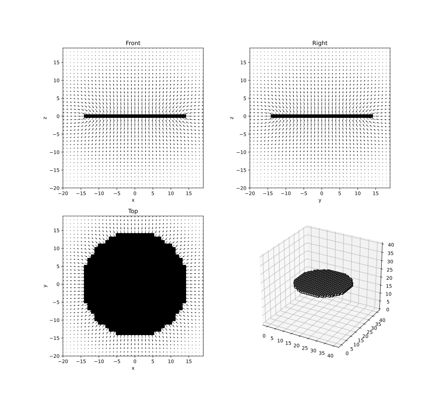
It turns out that this effect is quite significant!
Inhabitants living halfway to the edge of the ring from the middle would already have to stand tilted to stay up.
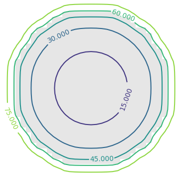
The angle at the disc equator is ~15 degrees.
As we showed in the math section above, this tilt angle is not dependent on the gravitational constant. Only the disc geometry.
The density is also not a factor: you can't make the effect go away by building a bigger disc.
So, a person living halfway to the disc edge from center will always be tilted by the same angle,
no matter the disc radius. (as long as it remains a disc, i.e. much thinner than it is wide)
Life on a Flat Disc
What would everyday life be like, on this gravitationally accurate disc world?
First, it would feel like the whole disc is tilting under your feet, like an undending steep slope.
And looking back, the downhill slope would be the previously flat surface you had walked on.
By the time you reached the edge, you would basically be rock-climbing,
the straight wall in front of you extending straight down for miles, all the way to the disc's other edge.
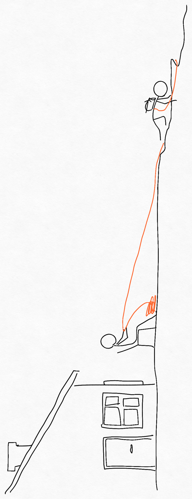
In fact, if at that point you accidentally dropped, say, a rubber ball from your pocket,
it would roll and roll straight down, past the center of the disc, slow down, and roll back the other way,
this would repeat, slower and slower due to friction, until it would stop, smack in the middle of the disc.
In other words it would feel like being on the inside of a gigantic bowl, but it would look flat.
(Except, of course for forests, hills, rivers, mountains.)
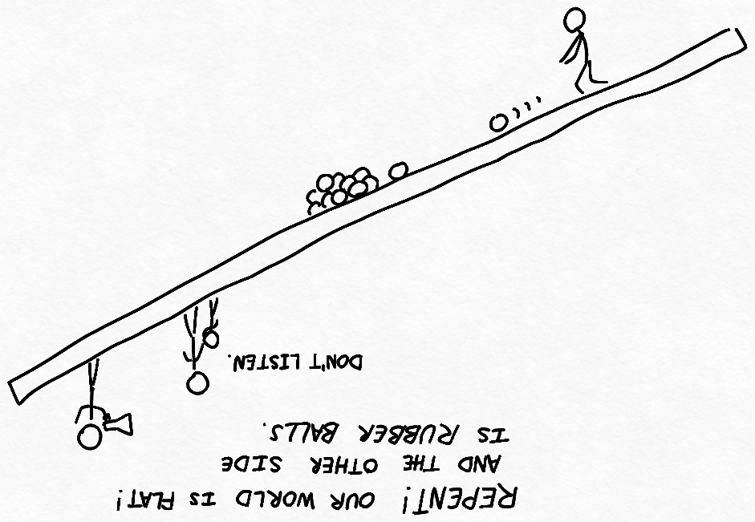
This also has interesting implications for geography and geology of our disc world: rivers will tend to flow towards the middle.
Of course, exceptions could exist in the case of local mountains or hills.
Still, the trend of water flowing towards the middle means that a sea there would be very likely.
(Fun fact: a large sea in the middle of our disc-world would naturally have to bulge up, due to the sideways forces of gravity.)
This makes the situation even steeper! Most of the inhabitable area of the disc is already in the 15degree+ zone.
Adding a sea in the middle would ensure that almost all inhabitants of disc-world live in steep to very steep regions.
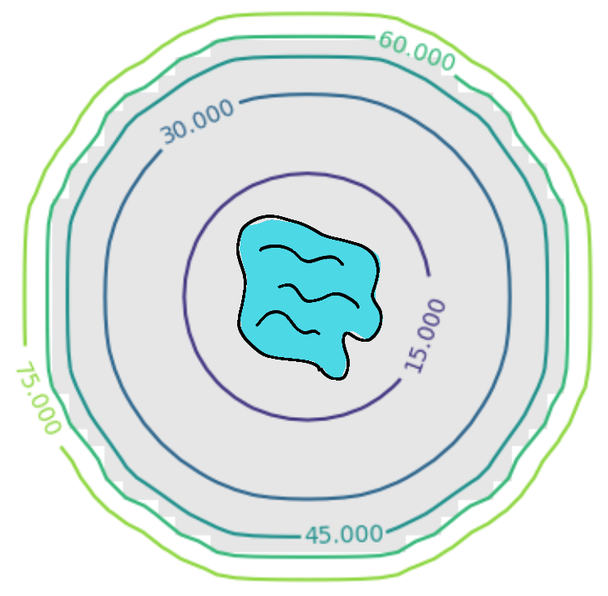
And it doesn't stop there,
According to Guiness World Record, the steepest road in the world has a 34% grade (less than 20 degrees!).
The steepest railway line in the world is 13.5% (around 8 degrees), which means that as we move away from the center,
disc-world pretty quickly requires s shaped railway, funiculars, and mountain-like roads.
Edge regions would be almost uninhabitable without advanced industry, and transportation there
would look more like cable-cars and ladders than roads and stairways.
"But what if the disc was denser in the middle? They say the earth has a dense iron core. Wouldn't this break our constant-density assumption? The simulation would be wrong?"
Well, yes. Here's what's neat about it, though: the constant density model actually gives us a 'best case', compared to a denser-in-the-middle disc.
Think about it: a disc which is denser in the middle means that the side force, pulling you towards the center is even stronger.
The tilt angle would be even worse throughout!
Then there's the fact matter on the disc's edge would tend move towards the center, through erosion,
rolling stones, wind, or whatever else. Over millions of years, unless it was made of some formidable material,
the disc would get thicker in the middle, and erode at the ends, eventually turning into a sphere.
And of course, since we built a strange-world gravity field calculator, it would be a shame not to put it to use.
Here are the gravity fields for cube-world, square-disc-world, and line-world.
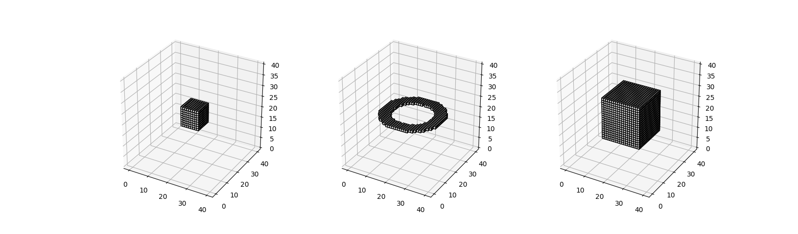
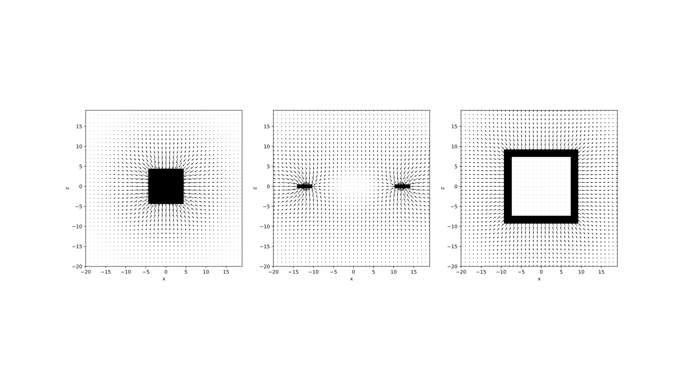
Notice that for uniform hollow objects, the simulated gravity field on the inside is 0.
This result is predicted by Gauss' law for gravity, and it's reassuring to see that the simulator produces the predicted result.
The strange physics of these imaginary worlds could inspire fantastic stories. Imagine a fortress
at the edge of the disc-world, almost impossible to reach, as it would require climbing an increasingly steeper hill
for miles and miles. It would take a several-year-long, arduous trip and the challenges along the way would be numerous,
through increasingly strange landscapes and improbable settlements.
(If that sounds cool to you, check out La Horde du Contrevent by Alain Damasio)
Gravity Field Simulator
This implementation is not memory-efficient at all, but it's good enough.
from__future__import print_function
importnumpyasnpfrommatplotlibimport pyplot as plt
frompyniel.pyplot_tools.plotimport gridshow
""" Visualizing 3D gravity fields for arbitrary voxel shapesWhat does the gravity field on a flat disc look like?am I attracted to the disc C.O.G wherever I go?Or to the disc surface, like if I was wearing magnetic boots?Which one and why?"""
shape ="flat disc"# create space
N =20
x = np.arange(-N, N)
y = np.arange(-N, N)
z = np.arange(-N, N)
yy, xx, zz = np.meshgrid(y, x, z)
# cosmological constants
G =1# all pixel weights = 1# occupied pixelsif shape =="cube":
L =5
occ = np.logical_and.reduce([np.abs(xx) < L, np.abs(yy) < L, np.abs(zz) < L])
elif shape =="flat square":
L =15
H =1
occ = np.logical_and.reduce([np.abs(xx) < L, np.abs(yy) < L, np.abs(zz) < H])
elif shape =="flat disc":
R =15
H =1
occ = np.logical_and(np.sqrt(xx**2+ yy**2) < R, np.abs(zz) < H)
elif shape =="line strip":
L =15
occ = np.logical_and(abs(yy) +abs(zz) ==0, np.abs(xx) < L)
elif shape =="hollow sphere":
r =13
R =15
rr = np.sqrt(xx**2+ yy**2+ zz**2)
occ = np.logical_and(rr < R, rr >= r)
elif shape =="hollow cube":
S =10
s =8
nn = np.maximum.reduce([np.abs(xx), np.abs(yy), np.abs(zz)])
occ = np.logical_and(nn < S, nn >= s)
oi, oj, ok = np.where(occ)
ox = x[oi]
oy = y[oj]
oz = z[ok]
# force from each pixel to each other pixel
dx = ox[None,None,None,:] - xx[:,:,:,None]
dy = oy[None,None,None,:] - yy[:,:,:,None]
dz = oz[None,None,None,:] - zz[:,:,:,None]
d = np.sqrt(dx * dx + dy * dy + dz * dz)
d[d ==0] = np.inf
fx = dx / d * G / d**2
fy = dy / d * G / d**2
fz = dz / d * G / d**2
fx = np.sum(fx, axis=-1)
fy = np.sum(fy, axis=-1)
fz = np.sum(fz, axis=-1)
fig, axes = plt.subplots(2,2)
plt.sca(axes[0,0])
plt.title("Front")
# 2D front (X-Z) section
gridshow(occ[:,N,:], extent=[x[0], x[-1], z[0],z[-1]])
plt.quiver(xx[:,N,:], zz[:,N,:], fx[:,N,:], fz[:,N,:])
plt.xlabel('x')
plt.ylabel('z')
plt.sca(axes[0,1])
plt.title("Right")
# 2D right (Y-Z) section
gridshow(occ[N,:,:], extent=[y[0], y[-1], z[0],z[-1]])
plt.quiver(yy[N,:,:], zz[N,:,:], fy[N,:,:], fz[N,:,:])
plt.xlabel('y')
plt.ylabel('z')
plt.sca(axes[1,0])
plt.title("Top")
# 2D top (X-Y) section
gridshow(occ[:,:,N], extent=[x[0], x[-1], y[0], y[-1]])
plt.quiver(xx[:,:,N], yy[:,:,N], fx[:,:,N], fy[:,:,N])
plt.xlabel('x')
plt.ylabel('y')
fig.delaxes(ax=axes[1,1])
plt.show()
# slant angle at mid-latitude
equator_slant = np.arctan2(fx[27,20,21], fz[27,20,21]) *180/ np.pi +180# slant angle at mid-latitude
edge_slant = np.arctan2(fx[35,20,21], fz[35,20,21]) *180/ np.pi +180
Note: No affiliation to xkcd or Randall Munroe. I just can't draw anything more complicated than a stick figure.